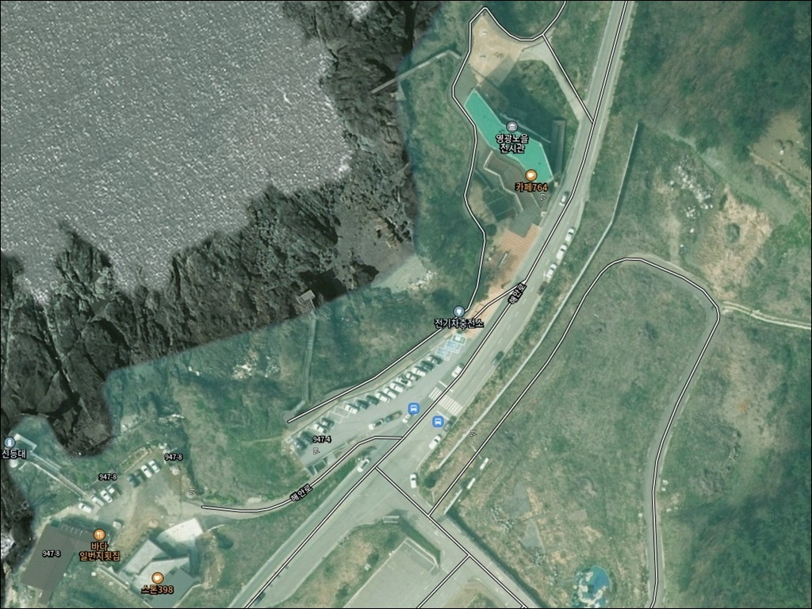
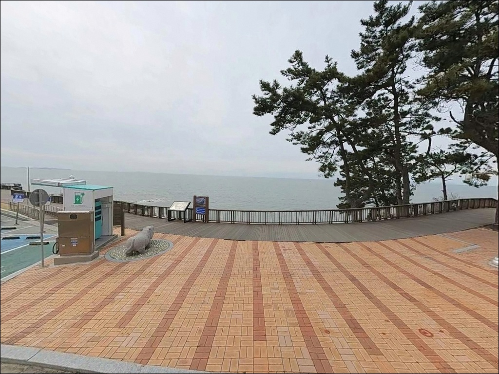
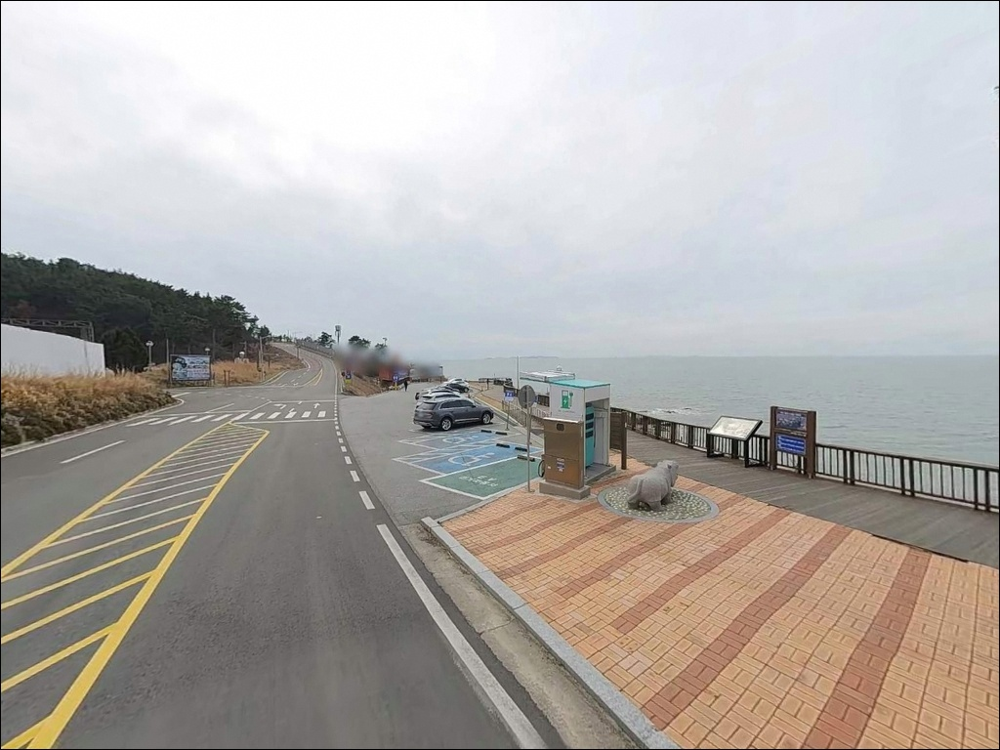
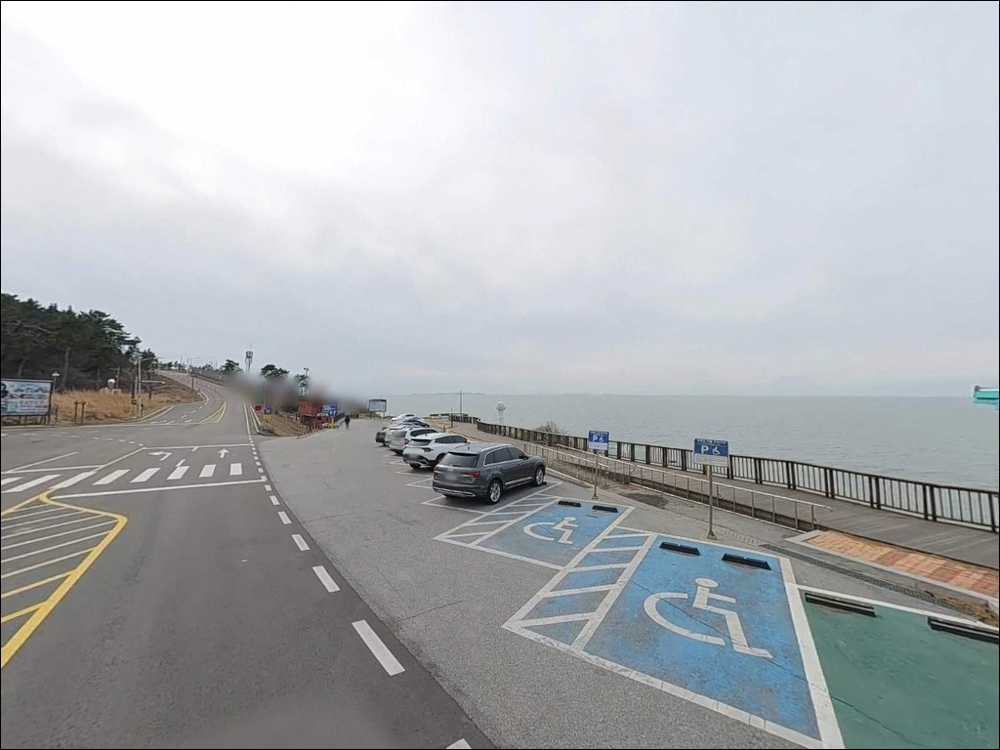
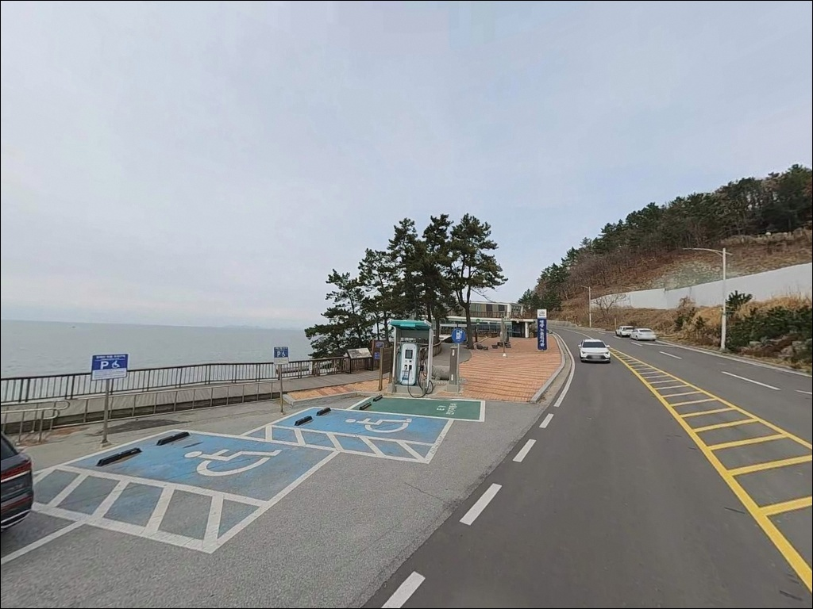
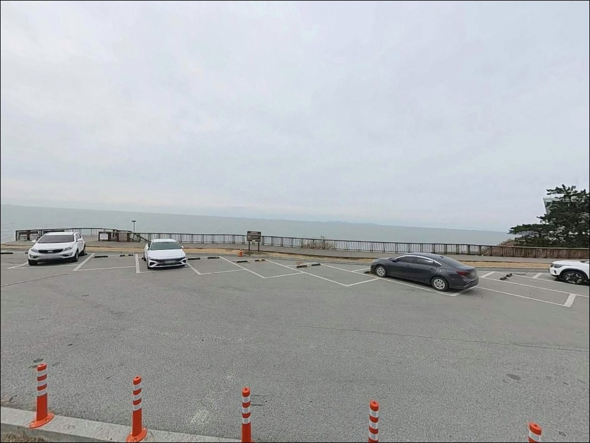
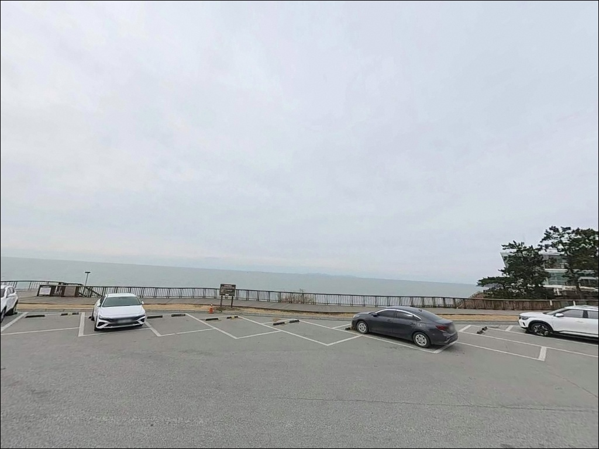
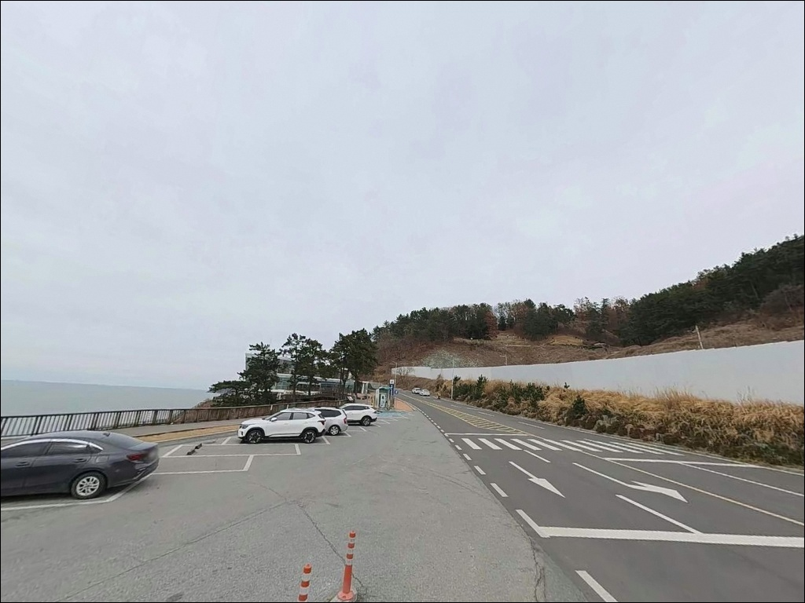
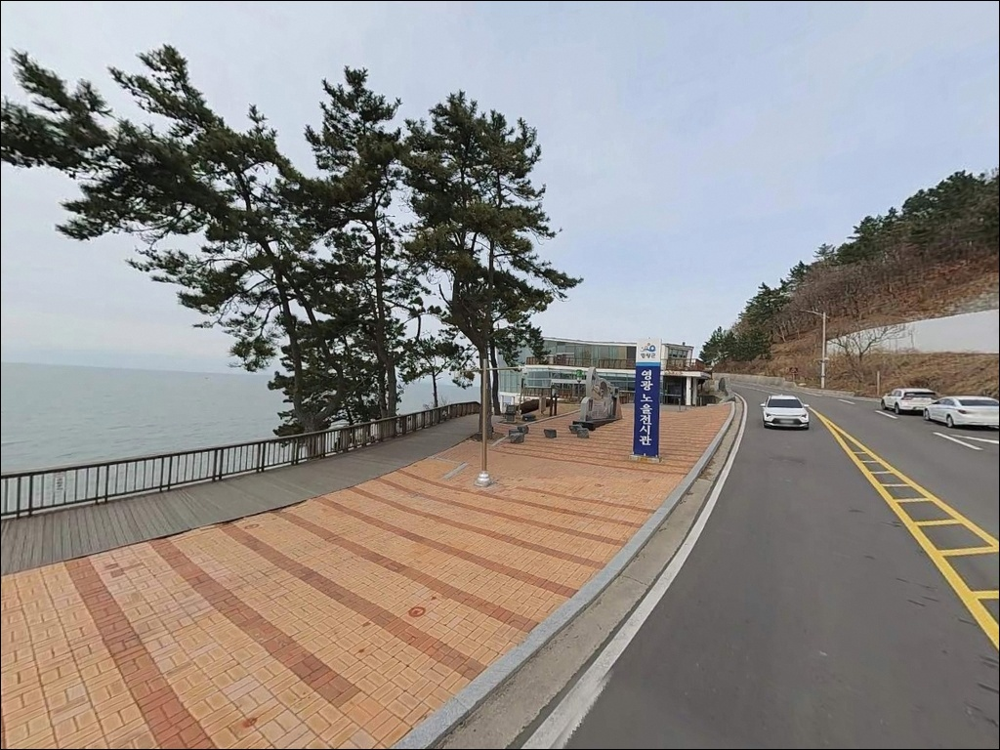

영광노을전시관, 전남 영광군 자연의 여백을 느낄 수 있는 차박, 낚시 명소


포인트 안내
영광노을전시관
전남 영광군 백수읍 대신리 764 (해안로 957)
전시관 바로 아래에 갯바위 낚시 발판이 바로 있을 거라고
기대하고 진입하면 낭패를 보기 쉽습니다.
절벽형 구조라 전시관 정면 아래는 경사면이라
낚시 발판을 잡기 어렵고,
접근 가능한 갯바위 구간을 사전에 파악하지 않으면
포인트를 찾다 시간을 다 보낼 수 있습니다.
백수해안도로(16.8km) 구간 중 하나인 이곳은
기암괴석 해안선과 데크 산책로 아래
갯바위 구간이 이어지는 서해 남부 탐색형 포인트입니다.
이 글은 갯바위 접근 가능 구간의 진입 여건,
차박 조건, 낚시 방식 적합성에 집중하며,
조황 단정이나 특정 어종 보장은 이 글의 범위에 포함되지 않습니다.

1. 진입 동선과 포인트 접근성
백수해안도로는 포장된 2차선 해안 드라이브 코스입니다.
일반 승용차와 소형 SUV 기준으로
진입 자체에는 큰 어려움이 없으며,
전시관 구간은 해안도로 대표 명소답게
관광버스도 들어오는 정비된 진입 동선을 갖추고 있습니다.
전시관 전용 주차장이 무료로 운영되며,
해안도로 일대에 공영 주차장 8개소가
분산 조성되어 있습니다.
주차 및 회차 여건은 양호한 편이나,
대형 캠핑카나 카라반이라면
해안도로 특성상 구간에 따라
회차 공간이 제한되는 구간이 있어
출발 전 동선 확인이 먼저입니다.
실제 낚시 접근은 데크 산책로(해안노을길, 3.5km) 방향으로
이어진 계단 또는 통로를 통해
갯바위 하단으로 내려가는 구조입니다.
어두워지기 전에 접근로와 발판 위치를 먼저 확인해두는 것이
이 포인트 방문에서 가장 중요한 준비 단계입니다.

2. 차박 환경 평가 및 야간 체류 여건
영광노을전시관은 서해안 대표 낙조 명소입니다.
일몰 시간대에는 차량과 관광객 유입이 상당하며,
조용한 숙박형 차박보다는 관람 중심 방문지에 가까운 곳입니다.
야간에 관광객이 빠진 뒤에는 통행이 줄어드는 편이며,
민가 밀집도가 낮은 해안 자연경관 구간이라
비성수기 야간은 상대적으로 조용한 편입니다.
데크 산책로와 전망대가 조성된 구간이라
일부 경관 조명이 있는 편입니다.
다만 실제 갯바위 접근 구간에는
야간 조명이 닿지 않는 구간이 있어
헤드랜턴과 보조 조명은 필수입니다.
절벽 해안 구조라 서풍 계열 기상 시에는
바람 영향을 직접 받을 수 있어
기상 확인이 체류 전 기본 조건입니다.


3. 주변 편의시설 및 인프라 현황
전시관 지하 1층에 매점과 카페가 있습니다.
전시관 운영시간(하절기 10:00~18:00,
동절기 10:00~17:00, 매주 월요일·신정·명절 당일 휴관) 내에는
기본 식음료와 위생시설 이용이 가능합니다.
운영시간 외에는 이용이 불가하므로
야간·새벽 출조 전 물과 식량은 미리 챙겨두는 것이 기본입니다.
반경 3km 이내에 이마트24 영광백수해안로점이 있어
편의점 수준의 보급은 가능한 편입니다.
해안도로를 따라 카페와 식당이 일부 분포하나,
운영 시간과 계절에 따라 달라지므로
낚시 소품·얼음·연료는 영광읍 방향에서 미리 채워두는 편이 확실합니다.

4. 방문 전 반드시 챙겨야 할 준비사항
이 포인트에서 가장 먼저 확인할 것은 물때입니다.
서해 남부 칠산바다는 조수간만 차가 크고
사리 전후에는 조류가 매우 강해집니다.
바다타임에서 영광 백수 기준 물때를 미리 확인하고
조금 전후 또는 중들물 타이밍을 노려
출발 시각을 맞추는 것이 기본 전략입니다.
기암갯바위 특성상 밑걸림이 잦습니다.
채비 손실을 감안해 여분을 넉넉하게 준비하는 것이
이 포인트 방문의 기본입니다.
절벽 해안도로 구간이라 기상 변화가 빠를 수 있어
출발 전 기상청 해상 예보를 반드시 재확인합니다.
물때 확인 없이 서해 갯바위 포인트에 진입하면
채비를 펼치기도 전에 이동해야 하는 상황이 생깁니다.
구명조끼는 갯바위 낚시 시 착용이 기본이며,
야간에는 헤드랜턴과 미끄럼 방지 신발이 필수입니다.
관광 명소이므로 쓰레기는 모두 가져오는 것이
기본 매너입니다.

5. 갯바위가 만드는 낚시 여건, 조류 타이밍이 핵심
백수해안도로 갯바위 구간은 조류 변화에 따라
어종 구성이 달라지는 탐색형 포인트입니다.
이 구간은 기암괴석이 이어지는 자연 갯바위 해안선으로,
바위 틈새와 홈통 구조가 발달된 지형입니다.
칠산바다를 끼고 있는 서해 남부 해역 특성상
조류 흐름이 기암 틈새를 통과하면서
어류가 은신처로 삼기 좋은 지형 조건을 만들어냅니다.
갯바위 발밑에서 완만하게 수심이 깊어지는 구간이 있으며,
간조 시에는 갯벌과 여가 드러나 탐색 범위가 넓어집니다.
사리 전후에는 조류가 강해 어떤 채비를 써도
컨트롤이 어려운 상황이 생깁니다.
조금 전후 또는 물이 들어오는 중들물 타이밍이
채비 운용과 어류 활성도 면에서
이 포인트에 맞는 입장 기준입니다.
출조 전에 영광 백수 인근 조황은 꼭 검색해 보시기 바랍니다.


6. 포인트에 어울리는 낚시 스타일
루어(라이트 락피싱)가 이 지형에서 가장 효율적인 방식입니다.
바위 틈새와 홈통 구조가 발달된 갯바위라면
가벼운 지그헤드 채비로 천천히 탐색하는 방식이 어울립니다.
중들물 이후 활성도가 올라오는 시간대에
암초 경계선을 따라 천천히 훑는 방식이 기본 공략이며,
우럭, 노래미(쥐노래미), 볼락류를 기대해볼 수 있는 구간입니다.
찌낚시도 이 구간 지형 조건에 맞는 스타일입니다.
조류 흐름이 살아있는 구간에서
찌채비로 중하층을 공략하면
감성돔을 비롯한 중층 어종 탐색이 가능합니다.
조류가 느려지는 조금 전후 타이밍에
흘리기 방식으로 운용하는 것이 이 조건에 맞습니다.
원투낚시는 데크 아래쪽으로 평탄하게 접근 가능한 구간이 있다면
장타로 수심 변화 구간을 노리는 방식이 어울립니다.
갯바위가 많은 해안선 특성상 밑걸림 가능성이 높아,
현장에서 저질을 먼저 가볍게 탐색한 뒤
포인트를 확인하고 본 채비를 투입하는 것이 기본 순서입니다.

7. 대안 포인트와 플랜 B 동선
갯바위 접근이 어렵거나 조류가 너무 강할 경우,
가장 가까운 대안은 법성포 방파제입니다.
노을전시관에서 차로 약 20분 거리에 위치한
영광 대표 어항으로,
내항·외항 구조의 방파제가 갖춰져 있습니다.
원투낚시와 루어낚시가 이루어지는 포인트이며,
진입과 주차 여건이 안정적인 편입니다.
같은 영광 권역에서는 계마항도 함께 탐색해볼 만합니다.
방파제 기반 포인트로,
노을전시관에서 해안도로를 따라 이동하면
닿을 수 있는 거리입니다.
법성포 방파제와 계마항을 묶어 당일 동선으로 구성하면
영광 권역 낚시를 효율적으로 운용할 수 있습니다.
차박 대안으로는 백수해안도로 내
다른 공영 주차장 구간을 활용할 수 있습니다.
전시관보다 인파가 적은 구간을 골라
조용한 체류를 원한다면
해안도로를 따라 이동하며 한적한 전망 주차 공간을 찾는 방식이 현실적입니다.

갯바위 탐색의 묘미를 아는 낚시인이라면
백수해안도로는 충분히 발품 들일 가치가 있는 구간입니다
물때를 이해하고 갯바위 접근로를 사전에 파악할 준비가 된 낚시인이라면
백수해안도로 구간은 직접 발품을 들일 만한 탐색형 포인트입니다.
루어나 찌낚시 중심으로 기암 틈새를 탐색하는 방식이
이 구간 지형 조건에 맞으며,
법성포 방파제를 플랜B로 두고 움직이면
영광 권역 하루 낚시 동선으로 짜임새 있게 활용할 수 있습니다.
방파제처럼 정해진 발판을 선호하거나
편의시설 접근을 중요하게 생각하는 분이라면
법성포 방파제를 메인 포인트로 잡는 편이 낫습니다.
물때, 접근로 확인, 갯바위 안전 수칙,
이 세 가지를 갖추고 진입한다면
노을이 지는 서해 갯바위 옆에서
낚시와 차박을 함께 즐기는 출조가 될 수 있는 곳입니다.